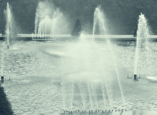

L'eau,
les eaux

Par ailleurs, son aptitude à mettre des corps en solution ne
doit surtout pas être sous-estimé. L'eau n'est pas une substance neutre (même si
elle l'est sur le plan électrochimique lorsqu'elle est parfaitement pure), mais
un liquide actif et réactif. Il suffit pour s'en convaincre de penser à son
action sur de simples cristaux de sel de table, par exemple. Elle en détruit
radicalement la structure ! Son action est puissante.
Marc Havel et Gilbert Delcroix (réf.)
l'écrivent : "L'eau par son caractère
polaire détruit les liens
électrostatiques entre les atomes et les molécules du corps à dissoudre et les
remplace par de nouveaux liens avec ses propres molécules et conduit à une
nouvelle structure." (p. 112)
Structure de l'eau, liaison
hydrogène :
lire passage in
Les liaisons entre atomes
Viscosité de l'eau -
l'eau, liquide newtonien :
lire
La rhéologie
Les
eaux
A signaler, une parenthèse sur
l'eau oxygénée,
dans le courrier des lecteurs.
Lien.
L'eau du robinet est assez chargée en éléments divers, minéraux
(métaux alcalinoterreux, alcalins,
etc.), "chimiques" (hydrocarbures azotés, etc.), bactériens, végétaux.
Mais surtout, elle est adjointe de chlore
en quantité variable, notamment en fonction de la pluviosité.
Cet élément et tous les autres composants indésirables interagissent, et attaquent
souvent les pigments et les supports, d'où l'intérêt des eaux...
*
déminéralisées : les sels minéraux sont éliminés par procédé
chimique (séparation des anions et des cations puis élimination du CO2).
On les trouve dans les grandes
surfaces et les quincailleries. Leur conditionnement ne les met généralement pas à
l'abri de certaines altérations.
* bouillies : la plupart des microorganismes sont détruits (pour un temps
limité), certains éléments indésirables peuvent s'évaporer, mais elles
demeurent chimiquement impures.
*
dégazées : douze ou vingt-quatre heures de repos voire quelques semaines, cela permet d'éliminer
une partie du chlore qu'une eau du robinet peut contenir. Une partie des métaux
alcalins est décantée
*
distillées : en théorie,
l'eau distillée idéale, c'est de l'eau pure H2O. En
fait, sa pureté - comme celle de l'eau déminéralisée - est mesurable et dépend
notamment du nombre de distillations. Chacun peut aisément distiller de
l'eau et le résultat obtenu n'est d'ailleurs pas médiocre.
*
osmosées : suite à un courrier des lecteurs qui nous a fait nous pencher
sur ce cas particulier (lire
l'article), on peut considérer cette eau comme nominalement aussi
satisfaisante qu'une bonne eau distillée pour des applications de type
arts/décoration.
* ultrapures : elle
est à "usage biologique" (cf. le courrier cité ci-dessus), c'est-à-dire
dénuée d'agents organiques.
Cependant, l'eau distillée fraîche a tendance à capturer le CO2
atmosphérique (Delcroix et Havel la considèrent
comme "très réactive" à cette molécule - p. 115) alors que
décarbonater l'eau est l'opération préalable à la fabrication des eaux
déminéralisées et distillées. Ce n'est pas sans raison que les flacons
vendus en pharmacie sont pourvus d'un bouchon de caoutchouc pouvant être
percé par une aiguille. Il n'est pas à exclure, en effet, que CO2+H2O
donnent un petit peu de H2CO3 (acide carbonique) et de
fait, une légère acidité peut être mesurée bien que cet acide se dissocie
instantanément à son tour en présence d'eau (provoquant une réaction
cyclique ?).
Il n'existe
pas d'eau parfaitement pure - surtout à partir du moment où le contenant a été
ouvert. De même, la collision de photons solaires à
forte énergie (UV) dissocie les molécules, ce qui peut augmenter la
probabilité de formation d'associations r-OH basiques et r-H acides, alors que
de toute façon, la dissociation de H2O en H+ et OH- est un
phénomène permanent, discret mais non négligeable. La chaleur joue un rôle car elle
accentue la probabilité
des "rencontres chimiques" indésirables - sans parler de la
population bactérienne. Résultat (constaté) :
l'eau distillée change progressivement, légèrement, de charge électrochimique, ce qui
signifie qu'elle est perdue pour certains emplois.
On la trouve en pharmacie.
L'eau pour peindre
Malgré le manque de neutralité que les eaux distillées
et déminéralisées présentent dès qu'elles perdent de leur fraîcheur, elles
sont toujours préférables, pour toute peinture à l'eau, à des eaux non
traitées, car elles ne contiennent pas certains éléments communs aux autres
eaux, qui sont sources d'altérations. Notamment, l'effet du chlore sur les
couleurs est rapide et bien connu, de même que celui des métaux alcalins,
lent mais beaucoup plus durable. Ces éléments ternissent considérablement
les peintures.
Conseil
prudent : quel que soit l'emploi auquel on la destine, conserver l'eau distillée ou déminéralisée au frais, à l'abri du soleil et vérifier
systématiquement son pH avant emploi.
L'eau que manipule l'artiste est impure car il ne
travaille pas dans des conditions de laboratoire. Il faut donc s'accommoder
de cette impureté.
Pureté
et gestion de l'impureté
La question de la pureté est assez importante. Par exemple, il est
déconseillé de verser de l'eau du robinet dans un pot de liant ou de colle
acrylique ou vinylique : cela accélère la formation de moisissures qui - comme
toute plante - font festin des sels minéraux. Les liants synthétiques aqueux,
les tubes et les pots de peinture aqueuse sont en principe préparés à l'eau
distillée ou déminéralisée.
Cependant, il est possible, moyennant quelques précautions, d'éviter l'emploi
d'eaux "traitées". Par exemple, pour diluer du liant synthétique
avec l'eau du robinet sans condamner
tout le pot, il suffit de verser la quantité nécessaire dans un second
récipient et de s'en servir sans trop attendre. Précaution supplémentaire : tester le
pH de l'eau avec du
papier
tournesol.
Une eau contenant des métaux
alcalinoterreux (ex. : calcium, baryum) ou alcalins
(ex. : sodium) et/ou du chlore
laisse des dépôts blancs au séchage ou blanchit la couleur. Des oxydes métalliques
se reforment au contact de l'oxygène, des sels
apparaissent éventuellement. Il vaut donc mieux éviter
l'eau du robinet car elle contient tout ce qu'il faut pour ternir vos travaux.
Pour rendre neutre une eau alcaline, ajouter un acide
dans l'eau n'est pas très efficace : il faudrait auparavant oxygéner l'eau, ce qui
n'est pas simple, laisser les métaux se précipiter, puis passer l'eau
déminéralisée.
L'eau
de vos tests chimiques
Plusieurs auteurs conseillent à juste titre l'emploi d'eau
distillée pour les opérations délicates. Elle est indispensable pour certains
tests qui nécessitent la mise en solution d'un produit dans une eau neutre. Par
précaution, il vaut mieux vérifier le pH de cette eau préalablement aux
tests. C'est même indispensable.
En effet, comme indiqué ci-dessus, cette eau est réactive au carbone
atmosphérique. Sans précautions (par exemple, si l'on ouvre le contenant plutôt
que de le percer d'une aiguille), elle peut s'altérer et perdre sa neutralité.
Un test qui n'est pas réalisé en laboratoire ne peut aucunement être parfait. Le
fait de vérifier le pH de l'eau avant le test permet cependant de se faire une
idée de la marge d'erreur des résultats du test à effectuer.
L'eau
des roches
H2O est présente dans la croûte terrestre (plus d'1% de la
masse). On la trouve aussi dans la plupart des météorites. Elle est
initialement "figée dans la roche" et c'est la cuisson de celle-ci
qui est à l'origine de la formation des océans et de la vie sur notre planète
- et pourquoi pas quelques autres. Évidemment, l'utilisation concrète de cette
information ne semble pas aller de soi. Si vous êtes dans le désert, rien ne
dit que la calcination d'un rocher vous permettra d'étancher votre soif,
cependant, dans certains domaines des arts du feu, elle peut s'avérer
importante.
Eau
et feu
A l'occasion de l'éruption de l'Eyjafjöll (Islande) du 14 mars 2010, on a pu
lire dans la presse des expressions telles que "l'éruption est la conséquence de
l'explosion de la glace au contact de la lave".
Fallait-il les entendre au pied de la lettre, la glace explose-t-elle vraiment
ou s'agit-il d'une figure de style ?
Pas de vulcanologues chez Dotapea pour répondre à cette question avec
certitude, cependant on rapportera une intéressante information du
Reptox dans l'article consacré à l'eau :
Produits de décomposition
Décomposition thermique: à plus de 1200°C., l'eau, sous forme de vapeur, se
dissocie en radicaux libres (hydrogène et hydroxyle).
Ainsi, en présence de laves qui ont précisément cette température
dans le cas de l'Eyjafjöll, la glace vaporisée peut se dissocier et devenir un
gaz très explosif. Il est donc possible que l'expression "explosion de la glace"
ne soit pas tout à fait usurpée. Sous réserve de confirmation. Et sans minimiser
les phénomènes liés à l'accumulation de vapeur. N'hésitez pas à
nous écrire à ce sujet important car il concerne
également les arts du feu.
Retour
début de page